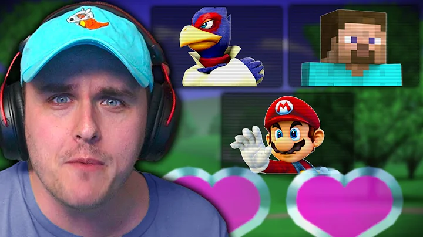
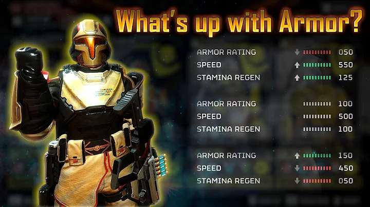
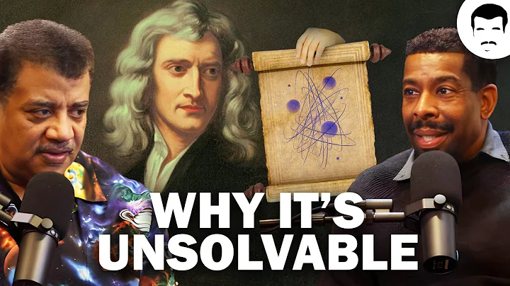
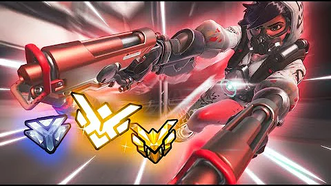
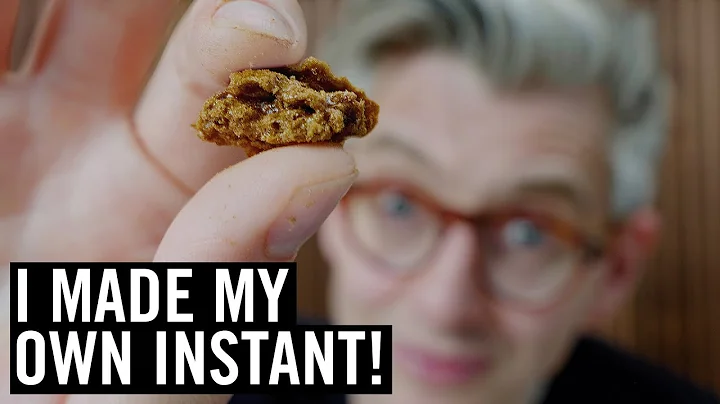

14:20
Ed popping off
2.4M views · 10 min ago

28:21
Beating EVERY Smash character with ONE LIFE
56k views · 4 days ago

24:24
I tested ALL ARMOR TYPES and PASSIVES in HELLDIVERS 2 so you don...
501K views · 1 month ago

11:34
Neil deGrasse Tyson Explains The Three-Body Problem
3.7M views · 12 days ago

43:20
How to SOLO CARRY on TRACER (Overwatch 2 Tracer Guide · Tips + Tricks)
248K views · 1 year ago

43:21
Making My Own Instant Coffee: Can I Make It Taste Good?
459k views · 5 days ago